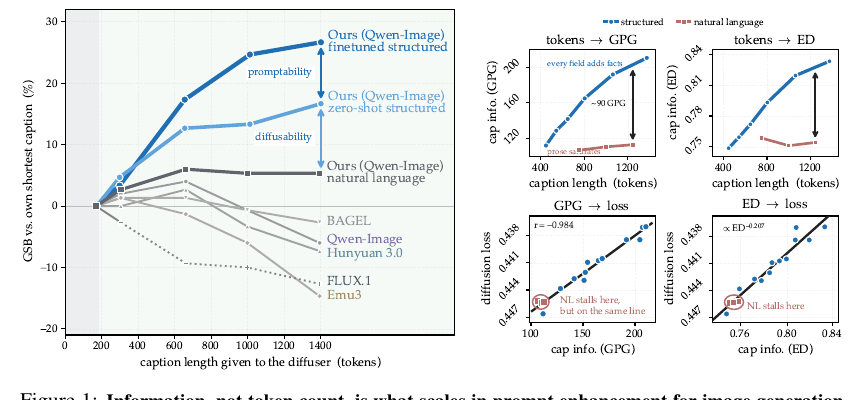
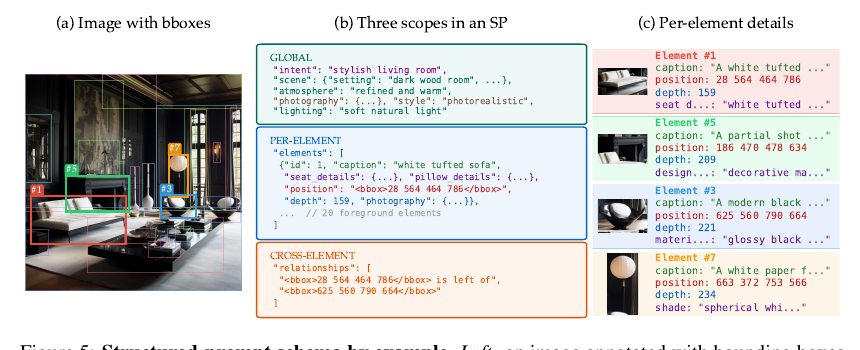
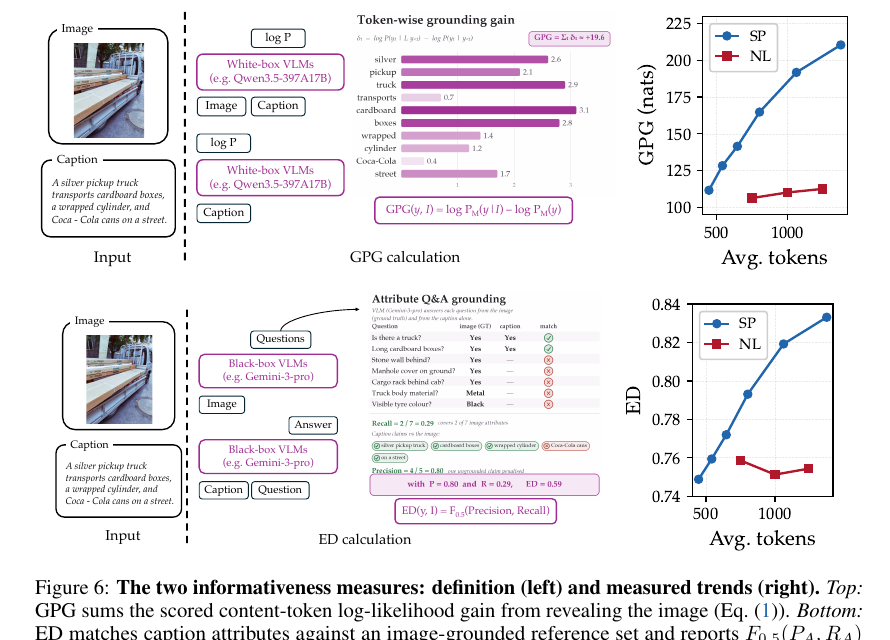
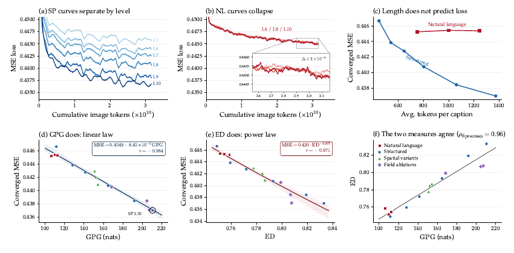
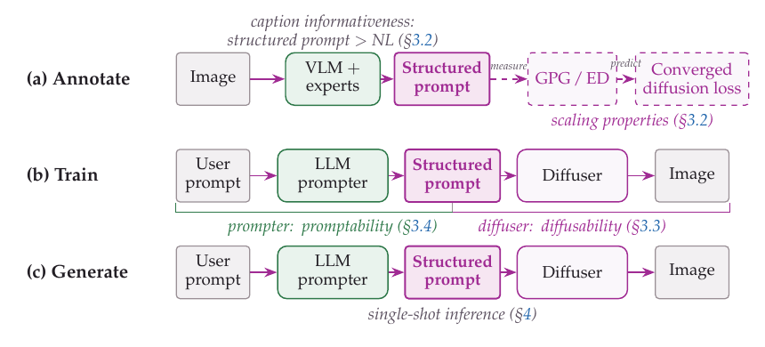
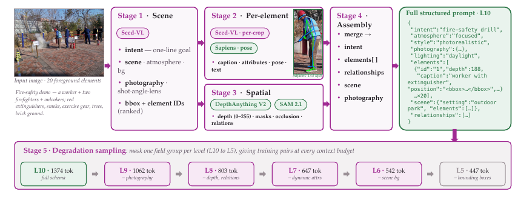

Scaling Properties of Text Conditioning in Visual Generation

发现
收敛扩散 loss 不看 token 数，看提示词的"图像相关信息量"。用 GPG（白盒似然）与 ED（黑盒属性）度量，loss 对 GPG 线性、对 ED 幂律。
表示
结构化提示词 SP：把全局场景 / 逐元素属性+bbox+depth / 跨元素关系写进带名字的 JSON 字段。用 VLM+冻结专家（Sapiens/DepthAnything/SAM）标注全图。
训练
两个能力：diffusability（扩散器学 SP→图）与 promptability（prompter 学 用户请求→SP）。prompter 走 SFT→cold-start→验证器门控 OPSD。
推理
单次：用户请求→prompter→SP→扩散器→图。可选 refine–render–judge 智能体循环，按失败的字段做定点修改。
SP（Structured Prompt）
结构化提示词：一段把视觉变量分配到具名字段的 JSON 说明（intent / scene / elements[bbox,depth,...] / relationships）。
GPG（Grounded Perplexity Gain）
白盒指标：把图给 VLM 看之后，caption 的似然涨了多少（对内容 token 求和）。是 caption–图 互信息的一个操作性估计。
ED（Effective Detailness）
黑盒指标：把 caption 属性和"从图里独立抽取的属性"对齐，报 F0.5(精确率, 召回率)。不需要 token 概率。
diffusability
扩散侧能力：一种 caption 表示把图像信息"暴露+组织"得多好，让扩散器好学。固定训练配方下由 GPG/ED 排序。
promptability
LLM 侧能力：一个 prompter 从用户请求把 SP 界面"填出来"填得多好（用生成图质量衡量，不是 JSON 合法性）。
OPSD
On-Policy Self-Distillation：在 student 自己采样的轨迹上，用一个能看到参考图的 teacher 的 next-token 分布做 KL 蒸馏；只更新 student。
GSB
Good/Same/Bad：VLM 对两张图的净偏好，100·(n好−n坏)/N，双序判定、序不一致算 Same。
RFT / cold-start
RFT=强化微调（此处的 RFT 阶段用验证器门控的 OPSD）；cold-start=用带图 teacher 的推理轨迹教会 prompter"无图也能推理到 SP"。
1. 出发点 (Motivation)
作者从一个被大家默认、但其实很别扭的类比讲起：语言模型和文生图模型的训练信号来源根本不对称。
- 语言模型从文本流本身拿训练信号——文本既是输入也是标签。
- 文生图模型学的是文本条件下的生成，信号来自图–文对。这里有个漏斗：caption 说得含糊的视觉内容，只能微弱地传给模型当条件监督；caption 干脆没提的内容，即使像素里全都有，也一点都传不到模型。
所以 caption 里"和图像挂钩的信息量"，可能才是决定生成器能从文本学会恢复什么的上限。但这个量长期没被当成一个可控的训练变量来研究。
大家常做的干预是"把提示词写得更长更细"。作者用一个很干净的探针（Fig. 3，固定 Qwen-Image backbone + 固定采样种子，从同一份标注派生出四条越来越长的自然语言 caption 去重建同一张参考图）发现：caption 越写越长，重建质量几乎纹丝不动。加的都是对已有内容的铺陈，没给扩散器任何新的可恢复变量。而当他们改用结构化 JSON、逐步把字段组恢复回去时，重建稳步变好。
一句话总结出发点：缩放文本条件，缩放的应该是"图像相关信息量"这个量，而不是 token 数。 本文要做的就是：(1) 把这个量量化出来（GPG/ED），(2) 证明它能预测扩散训练 loss，(3) 据此设计一套能真正把它做上去的系统。
2. 方法 (Method)
2.1 结构化提示词 SP：把视觉变量放进具名字段

SP 不是简单地"用 JSON 包一层散文"。它的关键在于把每一个视觉变量分配到一个具名字段，从而：(a) 内容更全（bbox、depth、关系这些散文里很难自然写清的东西有了专属位置）；(b) 可寻址（推理时能对单个字段做定点编辑，见 Fig. 2 的零样本编辑）。
2.2 两个信息量指标：GPG（白盒）与 ED（黑盒）

Grounded Perplexity Gain（GPG，白盒） 度量"把配对图揭示给一个冻结 VLM 判官 \(M\)（这里是 Qwen3.5-397B-A17B）后，caption 的似然涨了多少"：
—— 翻译：对 caption 的每个"内容 token"\(y_t\)（\(m_t=1\) 才算，跳过 JSON 的键/括号/逗号），比较"看得到图"与"看不到图（\(\varnothing\)）"两种情况下模型对它的对数似然，把差值加起来。看到图后越"惊喜地容易"预测出来的 caption，说明它和图挂钩越紧、信息越多。这是 caption–图互信息的一个操作性估计。注意它是求和（total）不是逐 token 均值（rate），所以会随 caption 变长而增大——这正是 Fig. 6 里 SP 曲线一路往上的原因。
Effective Detailness（ED，黑盒） 不需要 token 概率。它让"图侧提取器"（Gemini 3 Pro，只看图）和"文侧提取器"（GPT-5.4，只看 caption）各自抽出 对象–属性–关系–定位 元组，再用一个容忍改写的匹配器判定哪些互相支持，得到 caption 侧属性精确率 \(P_A\) 与图侧属性召回率 \(R_A\)：
—— 翻译：\(F_{0.5}\) 是偏向精确率的 F 值（\(\beta{=}0.5\)，精确率权重是召回率的 4 倍）。选它是因为**"caption 编造了图里没有的属性"比"漏掉一些属性"危害更大**——前者会给扩散器灌进错误的条件监督。
2.3 缩放律：信息量预测收敛 loss

作者搭了一个受控 15 格实验：同一份全图标注派生出 15 种 caption 配置（3 个 NL 长度控制 + 6 个 SP 层级 + 3 个坐标网格变体 + 3 个字段消融），每种配置从同一个 BAGEL checkpoint 单独训练一个扩散器到相同预算（\(2.84\times10^{10}\) 累计图像 token），除了 caption 配置外图像/初始化/架构/优化全部固定。结果：
—— 翻译：收敛的训练 MSE 对 GPG 线性下降、对 ED 幂律下降，两条拟合的残差标准差都在 \(6\sim8\times10^{-4}\) 量级（很紧）。而 caption 长度（Fig. 7c）完全排不出这条趋势。作者把这两条关系称为**"文本条件的缩放律"：在标定的架构+配方+测量范围内，caption 信息量能预测同预算下的收敛 loss。实用价值是——标定一次后，可以在不再训练扩散器**的情况下先筛选候选 caption 配置（留出集上 GPG/ED 拟合的平均绝对 MSE 误差只有 \(5.0/8.1\times10^{-4}\)）。
作者很克制地强调了边界：每个配置只训一次，所以图里的误差带是"对采样设置的敏感度"而非训练随机性；这条标定是 backbone 特定的（在 BAGEL 上拟合，端到端系统换成 Qwen-Image 时并未重拟合数值关系）；它是"配方特定的经验标定"，不是普适定理。
2.4 把缩放律拆成两个因子：Diffusability × Promptability
—— 翻译：\(f\) 是 caption 界面（包含它暴露了哪些字段组），\(\pi\) 是 LLM prompter。系统最终质量取决于两件事：界面本身把信息暴露得好不好（训练时能标注，测试时没有配对图）、以及 prompter 能不能从用户请求把这个界面填好。作者明说这是示意分解、不是拟合出来的乘法定律。下面 §2.5 提 diffusability，§2.6 提 promptability。

2.5 提升 Diffusability：用领域专家构造结构化监督

关键设计有两个：
- 冻结专家做"约束"而非"照抄"。 VLM 语义强但对身体朝向、精确几何不可靠——如果直接把它的猜测序列化，这些错误就变成了显式的条件变量（模型会当真去学）。所以让 Sapiens/Depth/SAM 出证据，最后由 VLM 把证据"调和"进文本字段（比如姿态用文字写进 element 的 pose 键），原始关键点/mask 只当中间证据不进 SP。
- 受控字段梯（field ladder）。 L5–L10 都是同一份 L10 标注的确定性投影（逐层遮字段组），这样"schema 丰富度"和"标注质量"就解耦了——层级之间只差暴露的信息/组织，不差重新标注。
| 层级 | Tokens | 相对上一级新增字段 | 训练侧 GenEval2 GM ↑ | 为什么这么排 |
|---|---|---|---|---|
| L5 | 447 | 基础字段（intent + 元素 caption） | 46.79 | 最裸的 SP，作对照基线 |
| L6 | 542 | + bounding boxes | 48.65 | 空间布局是第二大贡献项（见附录字段消融） |
| L7 | 647 | + 场景上下文 scene | 49.72 | 全局场景是单项最大贡献——它给了扩散器全局约束 |
| L8 | 803 | + 动态属性 | 52.94 | 动作/状态类属性，绑定"谁在干什么" |
| L9 | 1062 | + depth & relationships | 55.16 | 深度序+跨元素关系，管遮挡/前后/相对位置 |
| L10 | 1374 | + photography（相机/镜头/光） | 57.70 | 最全 schema，摄影字段收尾 |
—— 读法：GenEval2 GM 和对 L5 的 GSB 都随 schema 丰富度单调上升，说明"训练 loss 更低"确实转化成了"生成图更好"，不是只在 loss 上好看。
2.6 提升 Promptability：把 LLM prompter 训出来
测试时没有配对图，SP 界面得靠一个 LLM prompter 从用户请求推断出来——它要脑补用户没说的视觉细节，同时不违背用户明确的要求。作者先做了一个off-the-shelf 缩放实验：把 Qwen3.5 从 0.8B 到 397B 当零样本 prompter，固定 schema 和扩散器，发现生成质量随 prompter 规模上升（thinking 模式下 GenEval++ 从 46.4%→86.8%），且除了最小的 0.8B（推理容易陷入死循环）外，思维链都有额外增益。这等于说：通用 LLM 的进步能不经任务训练就通过 SP 界面传导到图像生成。
但即便 397B 零样本，填出来的 SP 也常常"视觉细节不够"、图偏简单。于是走三阶段后训练：
① SFT
用（图的原 caption 当"用户请求"，标注流水线产的 SP 当目标）配对，教会 prompter 一个"合理 SP 补全"的条件先验（含对象/属性/几何/深度/关系），不是死记 JSON 语法。
② Cold-start
让带图 teacher 写"无图 prompter 如何推理到目标 SP"的思维链；用 Gemini 判官拒掉那些"直接说出图里细节却给不出来源"的轨迹（防止特权图信息泄漏进 CoT）。
③ RFT = 验证器门控 OPSD
prompter 采自己的轨迹→扩散器渲染→验证器只看用户请求和图，用保守高精确率阈值当接受门；被接受的轨迹上再用 OPSD 从带图 teacher 蒸馏 token 级偏好。
OPSD 的损失（只更新 student \(\pi_\theta\)）：
—— 翻译：在 student 自己采样并被验证器接受的轨迹 \(\tau\) 上，让一个能看到参考图 \(I\) 的冻结 teacher \(\pi^\star\) 和看不到图的 student \(\pi_\theta\) 逐 token 对齐（\(D\) 是 KL）。核心不对称性是：teacher 有特权图信息、student 没有——OPSD 把"看图才知道的偏好"蒸给"只能靠推理的 prompter"。验证器决定哪些轨迹参与训练（门），OPSD 决定在这些轨迹上学什么（密集监督）。这正是本文和 d-opsd-2026/flow-opd-2026 在同一个 OPSD 原理、不同作用位置上的呼应（详见 §5）。
2.7 推理期：refine–render–judge 智能体循环
因为 SP 把视觉决策暴露成具名字段，所以判官的批评可以翻译成定点修改而不是重写整段 caption。第 \(t\) 轮：prompter 用（用户请求 + 累计批评 \(c_{t-1}\)）产出 \(\mathrm{SP}_t\) → 固定扩散器渲染 \(I_t\) → 在线 Gemini 判官只看用户请求和 \(I_t\)（看不到 SP），返回逐轴分数、PASS/FAIL、以及一张 (字段, 观察到, 期望) 的失败清单。FAIL 就把批评拼进上下文进入下一轮；反复失败允许越改越大（局部字段→重组元素→整场景重规划）。PASS 或 \(T_{\max}\) 停。注意：在线控制用 Gemini、最终评测用 GPT-5.4，控制信号和评测是两个模型，避免自我打分。
3. 结果 (Results)
端到端对比（Table 2，单次推理）。 在同一套 Qwen-Image backbone 上：
| 指标 | Qwen-Image 官方 PE | Matched NL 控制 | Ours (SP) | 原始 Qwen-Image (无PE) |
|---|---|---|---|---|
| GenEval | 0.91 | 0.91 | 0.94 | 0.87 |
| GenEval2 (AM/GM) | 82.4 / 52.8 | 84.5 / 56.2 | 90.6 / 72.5 | 80.8 / 33.8 |
| DPG-Bench | 87.20 | 87.80 | 90.71 | 88.32 |
| TIIF (short/long) | 88.3 / 88.4 | 88.5 / 88.0 | 89.1 / 89.2 | 86.1 / 86.8 |
| WISE | 0.83 | 0.84 | 0.89 | 0.62 |
| CoReBench | 74.7 | 76.1 | 85.2 | 58.9 |
关键在于Matched NL 控制：用同样的图、同样的阶段、同样的预算重训 Qwen-Image 扩散器+prompter，但保留自由散文界面——它把 GenEval2 GM/CoReBench 提到 56.2/76.1，仍显著低于 SP 系统的 72.5/85.2。也就是说：增益不是来自更大 backbone 或更多训练，而是来自结构化界面本身。作者报的对比里，Ours 在几乎每一项上领先所有开源模型，并在多数项上追平或超过 Nano Banana、GPT-Image-1 等闭源系统（世界知识 WISE 打平 Nano Banana 的 0.89，构图推理 CoReBench 85.2 超过 Nano Banana 的 75.9）。
Prompter 缩放（Fig. 9）。 schema 和扩散器固定，只换 prompter：质量随规模+思维链单调上升——把"LLM 通用能力的进步"直接变成"文生图的进步"。
训练阶段消融（Table 4）。 分工清晰：SFT 拿下最大单阶段 structure 增益（4.860→6.273，学的是 SP 内容分布不是语法）；cold-start 再提 structure/GSB；RFT 里验证器门控 OPSD 是最强端点（structure 7.600、GSB 42.0%），明显优于"验证器分数当 reward 的 GRPO"（7.113）和"不门控的 OPSD"（6.993）——门控和密集蒸馏缺一不可。有意思的是全流程里 DPG-Bench 只变了 1.29 分，说明 DPG 对这种结构/构图差异不敏感（Fig. 13 里肉眼可见的提升它测不出来）。
推理期缩放（§4.3）。 把 Base 和已训 prompter 放进同一个 refine–render–judge 循环隔离"迭代"和"backend"两个变量，证明多轮迭代确实带来独立于底座的增益（这也解释了 Table 3 里 Claude Code / Codex 这类智能体 backend 为什么强）。
4. 实现细节 (Implementation)
仓库 https://github.com/heheyas/context-scaling 开源了 evalkit（GPG/ED 度量）、pe-rsft（prompter 训练数据管线）、training（Qwen-Image 训练）、demo（在线 SP 编辑）。下面把论文主张锚到具体函数。
① GPG 的核心就是"两遍打分求差"（Eq. 1）。 同一段 caption 打两遍分：一遍给图（grounded）、一遍不给图（prior），差就是 grounding gain。注意只在内容 token（value 而非 JSON 键/括号）上算，去掉跨字段的上下文噪声。
@torch.no_grad()
def score(model, processor, caption, image, system_prompt=None, content_mask=None):
"""Return (sum_nll, n_tokens, mean_nll) over the caption span.
image=None ⇒ text-only prior pass."""
messages = _build_messages(caption, image, system_prompt=system_prompt)
text = processor.apply_chat_template(messages, tokenize=False, add_generation_prompt=False)
inputs = processor(text=[text], images=([image] if image is not None else None),
return_tensors="pt", padding=True).to(model.device)
cap_ids = processor.tokenizer(caption, add_special_tokens=False).input_ids
start, end = _locate_caption_span(inputs["input_ids"][0].tolist(), cap_ids)
logits = model(**inputs).logits # (1, T, V)
log_probs = F.log_softmax(logits[0, start-1:end-1].float(), dim=-1)
nll = -log_probs.gather(-1, inputs["input_ids"][0, start:end].unsqueeze(-1)).squeeze(-1)
if content_mask is not None: # 只在内容 token 上求和
nll = nll[torch.tensor(content_mask, dtype=torch.bool)]
s = float(nll.sum().item()); n = nll.numel()
return s, n, s / max(n, 1)
②（一处值得说清的实现细节，不是 bug）论文的 GPG 是"求和"，但 score.py 每样本存的是"逐 token 均值差"。 上面的 score() 返回 mean_nll，逐样本记录里 gpg = mp - mg 是均值差（per-token PMI，约 0.2~2 nats）；而论文 Eq. 1 / Fig. 7 里 GPG 是内容 token 上的求和（100~225 nats）。二者靠聚合那一步对上——aggregate_gpg 显式地 gpg_mean * n_tokens 还原成总和：
def aggregate_gpg(records):
"""Group into per-(kind, level) lists of *total* GPG values
(= gpg_mean * n_tokens) for each cell."""
out = defaultdict(list)
for r in records:
out[(r["kind"], r["level"])].append(r["gpg"] * r["n_tokens"])
return out
也就是说 Eq. 1 被工程上拆成了"逐样本存 per-token PMI + 聚合时乘 token 数"两步——既方便按内容掩码复用、也解释了为什么 total GPG 会随 caption 变长而增长。读代码时若只看 score.py 会以为 GPG 是 per-token，要连 io.py 一起看才对得上论文。
③ ED 就是 F0.5(精确率, 召回率)，偏向精确率（Eq. 2）。 精确率=caption 属性里被图支持的比例，召回率=图属性里被 caption 覆盖的比例；\(\beta{=}0.5\) 让"编造"比"漏掉"扣分更狠。
def f_beta(P, R, beta=0.5):
"""F_β = (1+β²)·P·R / (β²·P + R). Returns 0 when P = R = 0."""
if P == 0 and R == 0: return 0.0
b2 = beta * beta
denom = b2 * P + R
return (1.0 + b2) * P * R / denom if denom else 0.0
def per_row_F(match_record, category="A", beta=0.5):
src, sr = match_record["source"].get("A", []), match_record["source_recall"].get("A", [])
cap, cp = match_record["caption"].get("A", []), match_record["caption_precision"].get("A", [])
R = sum(1 for m in sr if m == "YES") / len(src) if src else 0.0 # 图侧召回
P = sum(1 for m in cp if m == "YES") / len(cap) if cap else 0.0 # caption 侧精确
return f_beta(P, R, beta=beta)
聚合用 Hampel 的 20%-截尾均值（trim20，丢掉最高/最低各 20%）抗提取/匹配偶发失败；幂律拟合 MSE = a·ED^b 在 log-log 上做（aggregate.py:_fit_power_law），对应 Eq. 4。
④ cold-start 的"防泄漏"验证器落在具体正则上。 论文说"Gemini 判官拒掉直接说出图里细节却无来源的轨迹"——代码里 check_no_leakage 用一组被动引用模式（"according to the reference/blueprint…"、"as shown in the json…"）来抓"照抄参考答案"的思维链，还额外禁止长 JSON 片段被 verbatim 引用。这保证 student 学的是"如何推理出 SP"，而不是"如何复述特权图信息"。
def check_no_leakage(thinking):
"""Catch PASSIVE DESCRIPTION of the reference answer (copying, not reasoning)."""
passive_patterns = [
r"according to the (?:reference|blueprint|given|provided)",
r"as (?:shown|specified|stated|given) in the (?:reference|blueprint|json)",
r"the (?:reference|provided|given) (?:blueprint|json|output) (?:shows|says|states) that",
r"(?:from|per|based on) the (?:reference|given|provided) (?:blueprint|json|answer)",
]
text_lower = thinking.lower()
for pattern in passive_patterns:
if re.search(pattern, text_lower):
return False
# 也禁止长 JSON 片段被逐字复制（>200 字符、≥2 段）
if len(re.findall(r'\{[^}]{200,}\}', thinking)) >= 2:
return False
return True
⑤ RFT 的"验证器门控"是一串硬约束的合取。 论文的"保守高精确率接受门"在开源数据管线里体现为 filter_record：JSON 合法 + bbox 合法 + 与参考 SP 的场景一致（名词袋重叠≥25%）+ 元素数在 ±50% + bbox IoU≥0.15，全过才算被接受的轨迹（缺任一即拒）。这就是"牺牲覆盖率换高精确率"的工程形态。
def filter_record(rec, cfg):
thinking = strip_boilerplate(rec.get("thinking") or "")
failures = []
if not check_length(thinking, min_len, max_len): failures.append("length")
if rec.get("mode") == "backward" and not check_no_leakage(thinking):
failures.append("leakage")
if not check_coherence(thinking, rec.get("prompt", "")): failures.append("coherence")
if not check_not_templated(thinking): failures.append("templated")
if rec.get("mode") == "forward":
gen_sp, ref_sp = rec.get("generated_sp"), rec.get("reference_sp", "")
if not check_forward_json(gen_sp): failures.append("invalid_json")
elif not check_bbox_validity(gen_sp): failures.append("invalid_bbox")
else:
if not check_forward_consistency(gen_sp, ref_sp): failures.append("scene_mismatch")
if not check_element_count(gen_sp, ref_sp): failures.append("element_count")
return len(failures) == 0, failures # 全过才被接受
注意（开源边界）： 仓库开源了 GPG/ED 度量、cold-start/RFT 的数据构造与验证门、以及 Qwen-Image 训练脚本；但 OPSD 的 token 级 KL 蒸馏训练循环（Eq. 6）本身没有以独立脚本形式给出（RFT 目录是分布式拒绝采样+验证的数据管线，产出的是偏好过滤后的 SFT/DPO 数据）。也就是说：验证器这一半可复现，teacher→student 密集蒸馏那一半依赖内部训练框架。这点复现时要心里有数。
5. 评述 (Critique)
5.1 强在哪里
- 把"caption 信息量"从描述性属性变成可控训练变量，这是概念上的真贡献。GPG/ED 两个正交指标（一个要 token 概率、一个不要）Spearman 0.96 的一致性，让"信息量预测 loss"这件事很难被说成是某个指标的伪相关。
- Matched NL 控制做得诚实。 同图同预算同阶段、只换界面，直接砍掉了"增益来自更大模型/更多训练"的解释——这是很多"我们的方法更好"论文最爱偷的懒，这里没偷。
- 可迁移的工程范式清晰：冻结专家出证据 / VLM 调和成文本、确定性字段梯解耦丰富度与标注质量、验证器门控与密集蒸馏分工。
5.2 值得存疑 / 局限（作者部分自陈）
- 缩放律是 backbone 特定的经验标定，不是定理。 数值关系在 BAGEL 上拟合，端到端换 Qwen-Image 时并未重拟合——所以"MSE=0.4549−8.45e-5·GPG"这条线不能跨 backbone 迁移，只有"结构化仍胜自由散文"这个定性结论迁了过去。作者说清楚了，但读者容易把公式当普适。
- 每个配置只训一次，15 个点的误差带是"对采样设置的敏感度"而非训练随机性——严格说 \(r=-0.984\) 这种相关系数没有 run-to-run 置信区间支撑，是"单次实现上的拟合优度"。
- 评测的裁判几乎全是大模型（GPT-5.4 offline judge、Gemini online judge、Soft-TIFA、VLM GSB）。当被评系统本身就是"为讨好 VLM 判官而结构化"的，"用 VLM 判官打分"存在目标与评测同源的隐忧；虽然作者用了"控制用 Gemini、评测用 GPT-5.4"来解耦，但两者都属"强 VLM 品味"，人类偏好研究基本缺席。
- 成本没有正面账。 L10 SP 有 1374 token，5 阶段标注要跑 Seed-VL+Sapiens+DepthAnything+SAM+VLM 组装，prompter 是 397B 上的 LoRA，推理还可能套多轮智能体循环——相对"直接给扩散器一句话"的算力/延迟代价，正文没有系统给出。
- 开源不完整（见 §4 注）：验证门可复现，OPSD 蒸馏循环依赖内部框架。
5.3 延伸阅读与交叉验证
本文的 OPSD 和本库里两篇"OPSD/OPD 用在扩散/流匹配上"的工作，构成了一组很有意思的对照——同一个 on-policy self-distillation 原理，作用在流水线的不同位置：
| 维度 | 本文 (Context-Scaling) | d-opsd-2026 (D-OPSD) | flow-opd-2026 (Flow-OPD) |
|---|---|---|---|
| OPSD 作用对象 | LLM prompter（文本侧） | 步蒸馏扩散模型本身 | 流匹配生成器本身 |
| student/teacher 不对称来源 | teacher 看得到参考图、student 无图 | 同模型分饰：teacher 拿 target 图 文本+图、student 仅文本 | 多 teacher 的 dense 速度场 监督 |
| 蒸馏目标 | next-token KL（Eq. 6） | student 轨迹上 self-distill，无 reward | reverse-KL 退化成速度场 L2 |
| 有没有 reward/验证器 | 有：保守高精确率验证器门控 | 无 reward | 无 reward（MAR 美学锚定） |
| 冻结谁 | 冻结扩散器，只训 prompter | 边用边学，在线更新生成器 | 训练生成器 |
分歧的可能成因： 三者对"什么是文生图的瓶颈"的判断不同。本文押注文本条件界面是瓶颈，于是冻住扩散器、把算力全砸在"把 SP 界面填好"的 prompter 上，OPSD 用来解决"测试时没有配对图"的信息不对称；而 D-OPSD/Flow-OPD 押注生成器的采样/概念适配是瓶颈，OPSD 用来在少步/在线设定下让生成器自蒸馏。一个把 OPSD 当"文本侧的信息补全器"，两个把它当"生成侧的分布对齐器"。谁更对取决于你的扩散器离饱和有多远——如果 backbone 已经很强（如 Qwen-Image），本文的"界面才是瓶颈"就更成立；如果 backbone 本身弱或要少步化，OPD/OPSD 直接作用在生成器上更划算。
另一条对照是重述式提示词增强（recaptioning）这条线（DALL-E 3、FIBO 的长 JSON caption、Cosmos 3 的结构化字段、Reve 2.0 的层级布局）：它们都发现"更结构/更细的 caption 有用"。本文的更细一层的主张是——有用的不是"更长"也不只是"JSON 语法"，而是可度量的图像相关信息量（GPG/ED），并且把这个量标定成了能预测 loss 的缩放变量。换句话说，前人给了"结构化有用"的定性结论，本文给了"为什么、以及能预测多少"的定量刻度。
研究启发 (Transferable Takeaways)
把"信息量"做成可筛选的代理指标
训练前用一个便宜的白盒/黑盒指标（似然增益 / 属性 F 值）给数据配置打分、先筛后训，能省掉大量"训完才知道好不好"的扩散训练。可迁移到任何"数据表示影响下游训练"的场景。
正交双指标互证因果
用两个原理不同的指标（要 token 概率 vs 不要）度量同一个隐变量，若二者排序高度一致（ρ=0.96），就大幅降低"伪相关"的怀疑。做度量类工作时值得抄。
专家出证据、生成器出文本
别把不可靠模型的原始预测直接序列化成条件——错误会变成显式监督。让冻结专家出中间证据，再由一个模型"调和"进最终表示。
确定性投影解耦"丰富度 vs 质量"
从一份最全标注确定性地遮字段派生出多个层级，让消融只变"暴露多少信息"、不变"标注质量"。这是做干净 ablation 的通用手法。
验证器门控 ≠ 验证器当 reward（反直觉点）
Table 4 显示：把验证器分数直接当 reward（GRPO 7.113）不如"验证器只当高精确率接受门 + 另一路密集蒸馏"（门控 OPSD 7.600）。把"筛哪些轨迹"和"在轨迹上学什么"拆开，比拿一个噪声分数硬做 RL 更稳。
结构化界面顺便解锁定点编辑
把生成条件写成具名字段，推理期批评就能翻译成"改哪个字段"而不是"重写整段"，零样本可编辑是 SP 的免费副产品。
讨论 / Comments
评论托管在本仓库的 GitHub Discussions, 需 GitHub 账号。